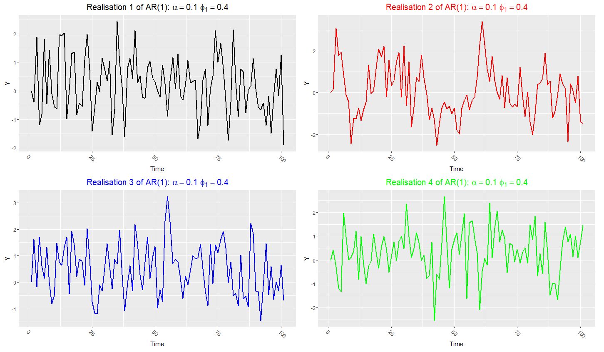
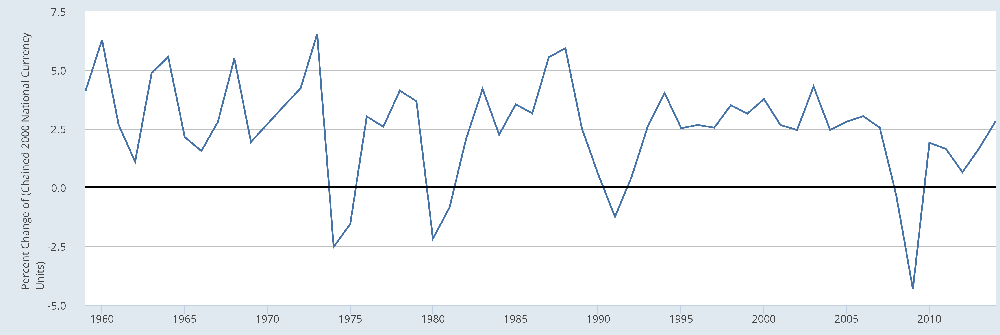

Companion videos · @economaths
How to read these notes
These notes follow the route of the TeX lecture notes, but break the ideas down more slowly. The early definitions are written for a student with A Level maths and basic statistics: random variables, expectations, variances and correlations. The later notes then build AR, MA and ARMA models from those definitions.
Whenever a technical object appears, such as the correlogram, the notes link to the page where that object is explained more fully. This means the pages can be read either in order or as a linked glossary.
1. Time-series process and sample realisation
A time-series process is the unknown mechanism that generates a variable through time. In the notation of the notes, we write the process as:
This notation means that for each date there is a random variable. Before the date arrives, the value is uncertain. The process is the collection of all those time-indexed random variables, together with their joint distribution.
Process: the unknown data-generating mechanism, written as \(Y_t\). It tells us the probabilities of different possible time paths.
A sample realisation is the actual sequence of values we observe:
Realisation: the observed data path, often written \(\{y_t\}_{t=1}^T\). It is one possible path generated by the underlying process.
The key intuition is the “replay history” idea. We observe one path of CPI, GDP or stock returns. But if we could go back in time and let the world evolve again, we would probably observe a different path. The process governs the probabilities of all those possible paths.

Four different sample realisations can be drawn from the same process. In real data we usually observe only one path.This is why time-series inference is not just curve description. We are not only asking “what does this graph look like?” We are asking what kind of process could plausibly have generated this graph.
2. Why an observed value can still be treated as random
Once CPI for September 2016 is observed, that number is fixed. But before September 2016 arrived, there was uncertainty about what it would be. Different future values had different probabilities.
The Bank of England fan-chart example in the notes is used to make this idea concrete. The central line is a best forecast, while the bands around it represent uncertainty. Wider bands mean less precise forecasts further into the future.
 The fan chart illustrates the idea that future values are random before they are observed.
The fan chart illustrates the idea that future values are random before they are observed.In the same way, a time-series process tells us how likely different future paths are, even though the realised data path becomes fixed once observed.
3. Examples of time-series realisations
Economic and financial time series can look very different. Some trend upward, some fluctuate around a stable level, some have strong seasonal cycles, and some appear close to random noise. This is why the notes start from examples before introducing formal models.
| Series | What the graph may suggest | Concept it motivates |
|---|---|---|
| GDP or CPI levels | Long-run movement and persistence. | stationarity and transformation. |
| Monthly sales or tourism | Repeated patterns at regular times of year. | seasonality. |
| Stock returns | Weak serial correlation but changing volatility. | diagnostics and financial econometrics. |
| Simulated AR/MA series | Controlled examples where the true process is known. | model intuition. |

A level series such as GDP can show trend and persistence, so time order matters.4. Stationarity: the process does not change its basic distribution over time
The notes define stationarity because we need some stability before we can learn from one observed path. If the distribution of \(Y_t\) changed completely at every date, then three hundred observations would not necessarily tell us much more than three observations: each date would be governed by a different distribution.
Intuitively, a stationary process does not “move” in its underlying probabilistic behaviour. It can move up and down in each realised path, but its mean, variance and covariance structure are stable.
Weak stationarity: \(E[Y_t]\) is constant, \(Var(Y_t)\) is constant and finite, and \(Cov(Y_t,Y_{t-k})\) depends only on the lag \(k\), not on the date \(t\).
The third condition is the specifically time-series part. It says the dependence between observations ten periods apart should be the same kind of dependence whenever we measure it.
This is why growth rates are often easier to model than levels. GDP levels may trend upward and fail stationarity. GDP growth may fluctuate around a more stable mean.
5. White noise: random shocks with no predictive memory
The notes then define white noise, because it is the basic shock process used inside AR, MA and ARMA models. A white-noise process fluctuates randomly around zero, has a constant variance, and has zero covariance across different dates.
- \(E[Y_t]=0\): the process fluctuates around zero.
- \(Var(Y_t)=\sigma^2\): the variance is constant.
- \(Cov(Y_t,Y_s)=0\) for \(t e s\): past observations have no linear predictive power for future observations.
White noise and stationarity are not the same. White noise is stationary, but a stationary process need not be white noise. A stationary process can still have autocorrelation.
Also, white noise does not automatically mean independent and normally distributed. If the notes write εₜ iid ~ N(0,1), that is a stronger assumption: independent, identically distributed and normal.
6. Autocovariance and autocorrelation: measuring memory
Once a process is stationary, we can summarise how it is related to its own past. The autocovariance function measures covariance between observations \(k\) periods apart:
The autocorrelation function, or ACF, standardises this by the variance:
Autocorrelation is easier to interpret because it is on the familiar correlation scale from −1 to 1. If \(ρ(1)\) is positive, high values tend to be followed by high values. If it is negative, high values tend to be followed by low values. If it is zero, there is no linear correlation at that lag.
In real data we do not know \(ρ(k)\), so we estimate it using the sample. Plotting the sample autocorrelations by lag gives the correlogram.
 The correlogram is the sample version of the ACF idea.
The correlogram is the sample version of the ACF idea.7. The first simple processes
The notes next introduce simple processes that generate different kinds of time dependence.
| Model | Basic form | Intuition | Where explained next |
|---|---|---|---|
| MA(1) | Yₜ = α + εₜ + θ₁εₜ₋₁ | Current value is a weighted average of current and previous shocks. | MA intuition |
| AR(1) | Yₜ = μ + φ₁Yₜ₋₁ + εₜ | Current value depends directly on the previous value. | AR intuition |
| ARMA(1,1) | Yₜ = μ + φ₁Yₜ₋₁ + εₜ + θ₁εₜ₋₁ | Combines lagged values and lagged shocks. | ARMA intuition |
The central idea is that dependence in time-series models is created deliberately. We decide whether the process remembers past shocks, past values, or both.
Next notes in this pathway
- How to read a correlogram: sample ACF, confidence bands, Q-tests and residual checks.
- AR, MA and ARMA processes: how shocks and lagged values create different dependence patterns.
- Advanced derivations, prediction and seasonality: lag operators, roots, Wold decomposition, estimation and forecasting.
Time series tuition
These notes support students working through university time-series econometrics. For 1-1 help with stationarity, autocorrelation, ARMA models, correlograms or exam questions, see econometrics tuition or financial econometrics tuition.